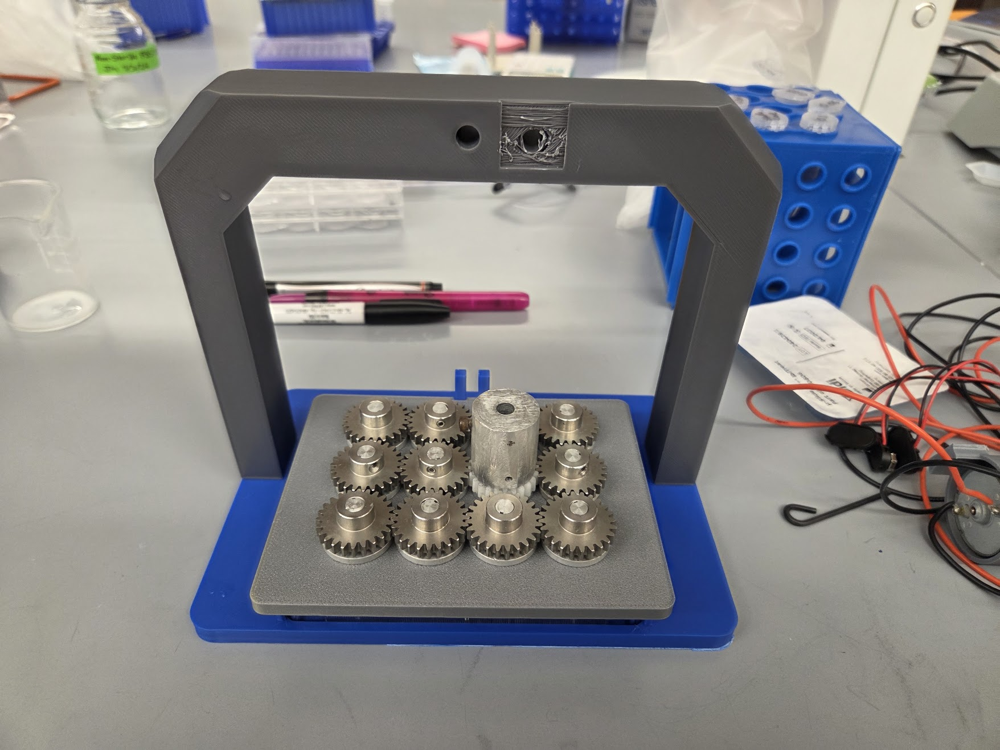
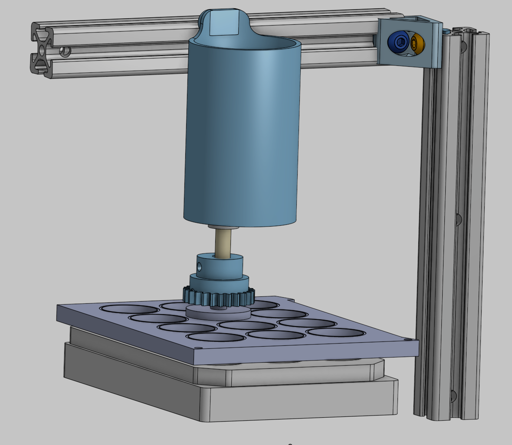

Why the system matters
Static cell cultures omit the flow-generated cues that influence cell phenotype and morphology. This platform focuses on the especially slow, low-magnitude shear regimes found beyond the blood-brain barrier—conditions that are difficult to reproduce consistently in conventional in vitro models.
Stabilizing long experiments
The legacy system used a suspended motor that shifted under vibration during runs lasting more than 24 hours. That movement changed the cone gap, produced undefined shear, and could disengage the drive inside a closed incubator. A rigid portal-frame redesign removed lateral wobble and maintained engagement across the 12 positions.


Finding the limiting tolerance
Extended testing traced metal contamination to friction at the cone holder’s retaining plate. It also showed that multiwell plate variation of ±150 μm could exceed the intended 100 μm cone gap. At 2.4 RPM, that dimensional error could shift shear stress by roughly ±0.05 Pa—large enough to compromise an ultra-low-shear experiment.
Design direction
The next iteration moves gap-critical parts from FDM-printed PLA toward machined components and introduces a precision reference spacer for repeatable holder elevation. After dimensional validation, the system can advance to CNS endothelial-cell trials and live fluorescence imaging during shear application.